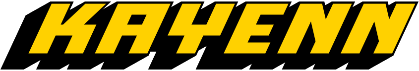
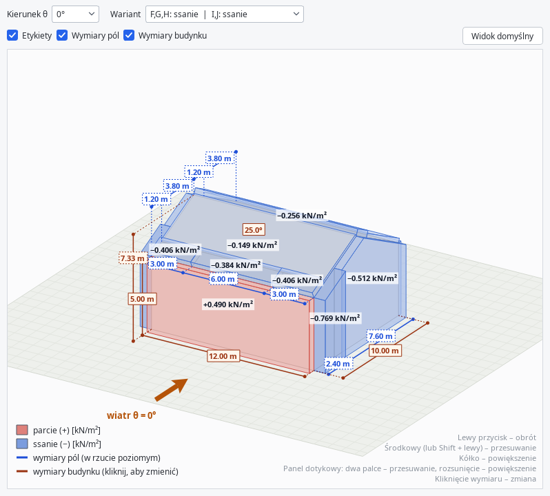
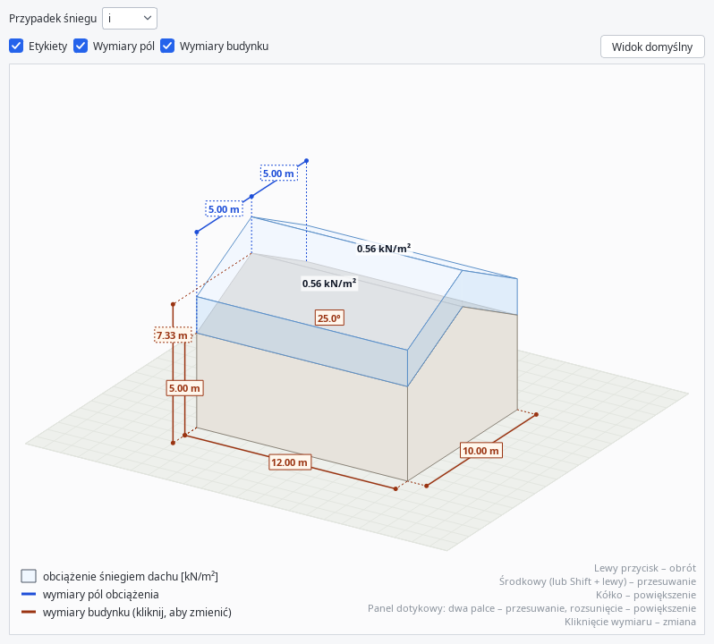
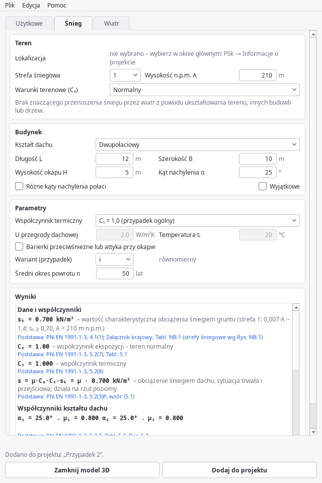

Śnieg, wiatr, obciążenia użytkowe i własne według PN-EN – z modelem 3D, bazą materiałów i wydrukiem. Darmowy program open source dla Windows, macOS i Linuksa.

Program do wyznaczania obciążeń charakterystycznych, w którym każdy wynik ma podstawę w normie – punkt, tablica lub wzór.
PN-EN 1991-1-3 z załącznikiem krajowym: dachy płaskie, jedno- i dwuspadowe, wielopołaciowe, walcowe, z attykami i przeszkodami; zaspy, nawisy, zaspy wyjątkowe.
PN-EN 1991-1-4 z załącznikiem krajowym: różne kształty dachów, daszki, wszystkie kierunki wiatru, warianty parcia i ssania, orografia.
PN-EN 1991-1-1: kategorie A–K, obciążenia poziome ścian, redukcja qk, wózki widłowe i bariery.
Baza materiałów z załącznika A PN-EN 1991-1-1 i ponad dwoma tysiącami kształtowników stalowych. Możesz ją dowolnie rozbudowywać.
Wskaż lokalizację na mapie (także po numerze działki) – program ustawi strefę śniegową i wiatrową oraz wysokość n.p.m.
Wszystkie przypadki w jednym pliku, grupy, cofnij / ponów, konsola poleceń oraz wydruk z obliczeniami i rysunkami 3D.
Rozkład obciążenia na modelu 3D budynku – z wymiarami, które zmieniasz kliknięciem.


Obok wartości program podaje punkt normy, tablicę lub wzór, z którego ją wzięto – łatwo to sprawdzić.
Aktualna wersja jest na stronie Releases w GitHubie.
| System | Plik | Instalacja |
|---|---|---|
| Windows 10 / 11 | …-windows-x64-setup.exe…-windows-x64.zip (przenośna) | uruchom instalator |
| macOS 12+ | …-macos-arm64.dmg (M1, M2…)…-macos-x64.dmg (Intel) | przeciągnij do Programów |
| Linux | …_amd64.deb…-linux-x86_64.tar.gz | sudo apt install ./kayenn_….deb |
To wersja 0.1.0 – wiele błędów już wyeliminowano, ale jedna osoba nie wyłapie wszystkiego. Przetestuj program i zgłoś problem, zwłaszcza błędny wynik obliczeń (z punktem normy).
Jeśli uważasz, że ten projekt jest wart rozwijania i chcesz, by stał się czymś naprawdę dobrym, możesz go wesprzeć materialnie – przycisk Sponsor w repozytorium.